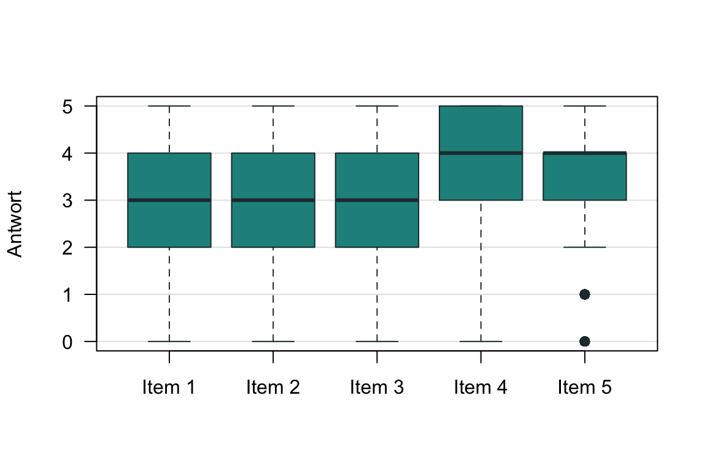

10 Itemanalyse I
WichtigWork in Progress
Dieses Kapitel wird derzeit intern überarbeitet. Aufgaben, Daten und Lösungen können sich noch ändern. Bitte bearbeiten Sie die Aufgaben erst, wenn die Überarbeitung abgeschlossen ist und dieser Hinweis entfernt wurde.
Eine Gruppe englischer Forscher:innen möchte ein Instrument zum Screening der Persönlichkeitsdomäne Extraversion entwickeln. In einer Pilotstudie erheben sie eine Reihe potenzieller Items aus dem International Personality Item Pool (IPIP). Dazu verwenden sie eine vollständig beschriftete Ratingskala mit \(k = 6\) ordinalen Antwortkategorien (Very Inaccurate, Moderately Inaccurate, Slightly Inaccurate, Slightly Accurate, Moderately Accurate, Very Accurate), kodiert von 0 bis 5. Mit den Pilotdaten möchten die Forscher:innen eine Itemanalyse durchführen.
In einer Pilotstudie werden oft viele Items in einer großen Stichprobe erhoben. Zum Üben betrachten wir zunächst nur die Antworten von \(n = 8\) Personen auf \(m = 3\) Items. Die Berechnungen orientieren sich an Kapitel 7 in Moosbrugger & Kelava (2020). Die Beispieldaten stammen aus dem Datensatz bfi des R-Pakets psych (Revelle, 2026); das Szenario ist fiktiv.
HinweisHinweis
Runden Sie Endergebnisse kaufmännisch auf zwei Nachkommastellen.
Aufgabe 1 (Messrichtung und Rekodierung) Die drei Items lauten:
| Item \(j\) | Itemstamm |
|---|---|
| 1 | I don’t talk a lot. |
| 2 | I find it difficult to approach others. |
| 3 | I know how to captivate people. |
- Schließen Sie vom Itemstamm auf die Messrichtung der Items: Notieren Sie für jedes Item ein \(+\) oder ein \(-\).
TippLösung
Item 1: \(-\), Item 2: \(-\), Item 3: \(+\)
Tabelle 1 zeigt die Antworten \(y_{ij}\) der \(n = 8\) Personen.
| Person \(i\) | Item 1 | Item 2 | Item 3 |
|---|---|---|---|
| 1 | 2 | 2 | 2 |
| 2 | 0 | 0 | 5 |
| 3 | 1 | 3 | 3 |
| 4 | 4 | 2 | 3 |
| 5 | 1 | 1 | 4 |
| 6 | 1 | 0 | 5 |
| 7 | 3 | 2 | 3 |
| 8 | 2 | 5 | 3 |
- Welche Items müssen Sie aufgrund ihrer Messrichtung rekodieren? Rekodieren Sie die Antworten \(y_{ij}\) dieser Items. Beachten Sie, dass \(y_{ij} \in \{0, \ldots, k - 1\}\).
HinweisHinweis
Bei Antworten von 0 bis \(k - 1\) wird eine Antwort \(y_{ij}\) zu \((k - 1) - y_{ij}\) rekodiert.
TippLösung
Items 1 und 2:
| Person \(i\) | Item 1 rekodiert | Item 2 rekodiert |
|---|---|---|
| 1 | 3 | 3 |
| 2 | 5 | 5 |
| 3 | 4 | 2 |
| 4 | 1 | 3 |
| 5 | 4 | 4 |
| 6 | 4 | 5 |
| 7 | 2 | 3 |
| 8 | 3 | 0 |
Aufgabe 2 (Itemschwierigkeit) Bei Items mit \(k > 2\) Antwortkategorien lässt sich die Itemschwierigkeit so berechnen:
\[ P_j = \frac{\sum_{i=1}^{n} y_{ij}}{n \cdot (k - 1)} \cdot 100 \]
Verwenden Sie die rekodierten Antworten aus Aufgabe 1.
- Berechnen Sie für jedes Item die Summe im Zähler. Geben Sie dazu auch die Summenschreibweise an.
TippLösung
\(\sum_{i=1}^{8} y_{i1} = 26\), \(\sum_{i=1}^{8} y_{i2} = 25\), \(\sum_{i=1}^{8} y_{i3} = 28\)
- Berechnen Sie \(P_j\) für alle drei Items.
TippLösung
\(P_1 = 65\), \(P_2 = 62.5\), \(P_3 = 70\)
- Welches Item ist am leichtesten? Was bedeutet „leicht“ bei diesen Items?
TippLösung
Item 3; höhere Werte bedeuten leichtere Items. Bei einem leichten Item fällt es den Befragten leicht, zuzustimmen; bei rekodierten Items fällt es ihnen leicht, den Itemstamm abzulehnen.
Aufgabe 3 (Trennschärfe) Die part-whole-korrigierte Trennschärfe \(r_{it(j)}\) eines Items \(j\) ist die Korrelation der Antworten auf Item \(j\) mit der Summe der Antworten auf die übrigen Items.
- Berechnen Sie für jede Person die Summe ihrer (ggf. rekodierten) Antworten auf die Items 1 und 3 (Aufgabe 1).
TippLösung
Personen 1 bis 8: 5, 10, 7, 4, 8, 9, 5, 6
- Es bezeichne \(x_i\) die rekodierte Antwort von Person \(i\) auf Item 2 und \(y_i\) ihre Summe aus Teil a. Dann gilt:
\[ \sum_{i=1}^{8} (x_i - \bar{x})^2 = 18.88, \quad \sum_{i=1}^{8} (y_i - \bar{y})^2 = 31.5, \quad \sum_{i=1}^{8} (x_i - \bar{x})(y_i - \bar{y}) = 14.25 \]
Berechnen Sie die part-whole-korrigierte Trennschärfe \(r_{it(2)} = r_{xy}\) von Item 2.
HinweisHinweis
Die Formeln für \(s_x^2\), \(s_y^2\), \(s_{xy}\) und \(r_{xy}\) stehen in der Formelsammlung „Grundlegende Formeln“.
TippLösung
\(r_{it(2)} \approx 0.58\)
- Interpretieren Sie den Wert und begründen Sie kurz, warum die part-whole-Korrektur hier (nicht) sinnvoll ist.
TippLösung
Item 2 hängt deutlich mit der Summe der Items 1 und 3 zusammen; es misst vermutlich dasselbe Merkmal wie diese beiden Items. Die Korrektur ist sinnvoll: Bei nur drei Items würde Item 2 den Summenwert stark mitbestimmen und so die Trennschärfe künstlich erhöhen.
Aufgabe 4 (Verteilung der Itemantworten) Nun betrachten wir \(m = 5\) Items und die Antworten einer größeren Stichprobe von \(n = 2800\) Personen. Die Items 1 bis 3 kennen Sie bereits; die Items 4 und 5 messen ebenfalls Extraversion:
| Item \(j\) | Itemstamm | Messrichtung |
|---|---|---|
| 4 | I make friends easily. | \(+\) |
| 5 | I take charge. | \(+\) |
Die folgende Abbildung zeigt Boxplots der (rekodierten) Antworten auf die fünf Items.
- Berechnen Sie den Interquartilabstand (IQA) der Antworten auf Item 1 und interpretieren Sie ihn.
TippLösung
\(\text{IQA} = 2\): Die mittlere Hälfte der Antworten liegt zwischen den Kategorien 2 und 4.
- Einige Antworten auf Item 5 erscheinen im Boxplot als Ausreißer. Berechnen Sie den unteren Grenzwert für Ausreißer auf Item 5.
HinweisHinweis
Als Ausreißer gelten Werte unterhalb von \(Q_1 - 1.5 \cdot \text{IQA}\) oder oberhalb von \(Q_3 + 1.5 \cdot \text{IQA}\).
TippLösung
\(Q_1 - 1.5 \cdot \text{IQA} = 1.5\): Die Antworten 0 und 1 sind Ausreißer.
Aufgabe 5 (Exploratorische Faktorenanalyse) Tabelle 2 zeigt Ergebnisse einer Hauptachsenanalyse der fünf (rekodierten) Extraversionsitems mit einem Faktor und Varimax-Rotation, so wie die Funktion psych::fa() sie ausgibt. Einige Werte fehlen.
| Item \(j\) | PA1 | h2 | u2 | com |
|---|---|---|---|---|
| 1 | 0.60 | |||
| 2 | 0.48 | |||
| 3 | 0.59 | |||
| 4 | 0.53 | |||
| 5 | 0.28 |
HinweisHinweis
PA1: Ladung \(\lambda_j\) auf dem Faktor; h2: Kommunalität \(h_j^2\); u2: Spezifität \(u_j^2 = 1 - h_j^2\); com: Komplexität, d. h. die Zahl der Faktoren, auf die sich die Ladungen eines Items effektiv verteilen.
- Berechnen Sie die fehlenden Werte der Tabelle.
TippLösung
| Item \(j\) | PA1 | h2 | u2 | com |
|---|---|---|---|---|
| 1 | 0.60 | 0.36 | 0.64 | 1 |
| 2 | 0.72 | 0.52 | 0.48 | 1 |
| 3 | 0.59 | 0.35 | 0.65 | 1 |
| 4 | 0.69 | 0.47 | 0.53 | 1 |
| 5 | 0.53 | 0.28 | 0.72 | 1 |
Berechnet mit den gerundeten Werten der Tabelle; R gibt für Item 3 h2 = 0.34 und u2 = 0.66 aus, für Item 5 PA1 = 0.52.
- Berechnen Sie die Summe der quadrierten Ladungen (SS loadings).
TippLösung
\(\sum_{j=1}^{5} \lambda_j^2 \approx 1.98\)
- Berechnen Sie den Anteil der Varianz, den der Faktor erklärt (Proportion Var).
HinweisHinweis
Die Varianz jedes Items beträgt 1.
TippLösung
\(\frac{1.98}{5} \approx 0.40\)
- Welchen Wert hätte die Ladung von Item 4, wenn mit Oblimin statt mit Varimax rotiert würde?
TippLösung
0.69: Bei nur einem Faktor ändert eine Rotation nichts.
- Interpretieren Sie die Ladungen.
TippLösung
Alle Ladungen liegen zwischen 0.53 und 0.72 und damit über dem Orientierungswert 0.4. Ein substanzieller Teil der Varianz jedes Items geht auf einen gemeinsamen Faktor zurück, vermutlich Extraversion.
Literatur
Moosbrugger, H., & Kelava, A. (Hrsg.). (2020). Testtheorie und Fragebogenkonstruktion (3. Aufl.). Springer Berlin Heidelberg. https://doi.org/10.1007/978-3-662-61532-4
Revelle, W. (2026). psych: Procedures for Psychological, Psychometric, and Personality Research. Northwestern University. https://CRAN.R-project.org/package=psych